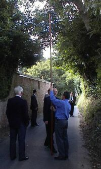

J'n'sais chein qu'en pense la couosine Trachy mais quant à mé j'sis d'avis qu'il est grand temps que nous ai tchicques femmes dans l's'Etats pour changi les louaies qu'ont été faites par l's'hommes pouor lus avantages.
J'n'sais chein qu'en pense la couosine Trachy mais quant à mé j'sis d'avis qu'il est grand temps que nous ai tchicques femmes dans l's'Etats pour changi les louaies qu'ont été faites par l's'hommes pouor lus avantages.
Viyant qu'nous est à faithe une collecte pouor l'dispensaire et que j'sis d'avis que nous devrait supporter de san mus dithèt institution, en lièsant l'avis sus la gazette, j'pensis: Pouortchi que tu n'donnerais pon, Marie, la pièche de sièz sous que tu trouvis il y a tchicque temps, oprès du bridge; oulle est perchie et n'v'la qui lus donnera good luck.
Quand j'ouvrit la cash box, iou que j'mets les tchicques coppers que j'peux sauver, j'failli tchès! Il n'y avait pus rein dedans et les deux ou trais billes que j'avais mins là n'taient pus là! J'pouossi un cri et j'me mit à plieuther.
L'Sieur Caouain - un raintchivaille, pouor seur - se réveilli et d'mandi chein que j'avais, mais en viyant la cash-box ouverte et rein d'dans y n'dit mot. Couomme j'voulais aller tout drait chès l'chantgni, chut oisé d'malheur s'fit: N'fait pon dithèt bêtise, car si l'chantgni sait que tu mets des souos de côté pour seur y nous mettront au rât l'année tchi vint!
Gnollin tes d'vis, que j'ly dit, car pouor être au mobilier y faut posséder pus que tu n'auras de touote ta vie.
M'viyant bein décidée à aller trouver l'chantgni, l'Sieur Caouain s'fit: Eh bein, écoutes ma chère Marie, chès mé qu'ait pris les souos pour les pliaichis et en avèr pus. Couomme j'ly d'mandais iou qu'était le livre de banque, si ch'tait d'même, y rêponnit qu'a la banque y n'voulaient pon prendre un si p'tit montant mais qu'un Moussieu angliais avait promins d'faithe d'san mus et avait r'mins les sous au greffi d'la p'tite Cour qui l'y avait bailli une coconette couomme prumi intérêt!
Autant d'mensonges et de sornettes mais l'pièthe d'l'affaithe ch'est quand j'alli sièz m'n'homme d'affaithes, dans Hill Street.
En m'viyant entrer dans l'office, ieun des mousses qui était à gazouillé un morciau d'papi sus l'desk, s'fit, à une jeune hardèlle qui tapait des daigts sus tchiquechose couome un bé p'tit piano: N'v'cheîn Marie Hibou, j'allons aver une bordée d'fun!!
- Et tchès que chunna t'fais à tè, espèce de marmouset, que j'li fit, t'es un affrontai pour faithe dithèt r'merques. Tu t'crais hardi grand viyant que tu es dans une office et que tu es dans une office et que tu as un collet assez grand pouor t'êtrangly, mais tu n'es rein en touot et tu n's'ras rein, viyant que tu as pus d'becque que de p'tits boudins dans la tête!
L'boss s'déshali et y m'dit d'entrer et de n'pon faithe attention au mousse, mais d'ly dithe pouortchi qu'il avait l'honneu d ma visite.
J'ly raconti que j'voulais raver les sous que l'Sieur Caouain avait pris dans ma cash-box, car l'greffi d'la p'tite Cour m'avait d'mandé si j'avais un tchurateur quand j'ly d'mandi les sous que l'moussieu angliais l'y avait donné à garder!
M'n'homme d'affaithe m'demandi si j'étais séparée. Faut dithe que j'fut bein surprinse de dithèt tchestion, car me j'sis d'avis qui faut mus laver son linge sale en famille. Enfin, j'ly réponnit que nennin, j'n'tions pas séparés, mais qu'l'affaithe n'allait pon en tout.
- Alors, qui s'fit, t'es femme couverte!
Encore un bé drôle de d'vis; bé seur, ch'est pon mé qui voudrait allait d'hors en ville coumme chès hardelles qu'nous vais les g'nors et les gambes à travers des cauches trouées, qui n'ont rein sus les bras et l'moins possible sus l'estoma!!
J'couommençais à en aver assez de chès d'vis de chutte homme d'affaithes et j'tais pour ly dithe qui f'rait mus de s'otchuper de ses affaithes quand y m'dit: J'vais bein, Marie, que tu n'comprends pon. Femme couverte veut dithe fémme mathiée et d'pis que tu es mathiée et pon sépathée quant auz biens il y a rein à faithe contre l'Sieur Caouain, viyant que tu ès sous puissance de mari et qu'il pouvait faithe avec tes sous chein qui l'y plaisait. Ch'est la louai.
La louai? Faite par les hommes mais n'v'la qu'est honteux et y faudra que chunna change, fouai de Marie Hibou.
* * *

La visite du branchage dans les paraisses est finie pouor chutte année mais les siens d'la Verte Rue, en la paraisse de St.-Ou, s'en rappelleront pouor tchicque temps quassiment touos futes mins à l'amende.
Le jeune John des Chinq Verges en écappi viyant que l'vent pouvait avèr soufflié dans la braique de son pré la gerbe de jonc qui s'y trouvait. George du bas de l'Etacq avait coupé ses fossés mais avait laissi l'tout dans la route.
Pour aver laissi pousser la sercle sus l'bannelais le long de son clios, l'p'tit Philip du Bas de l'Etacq en fut pour 36 sous mais Henri d'l'hotel trouve que chunna est honteux car chu bannelais appartiens au p'tit Frainque de Millais, qu'est payi deux chelins pour l'amonceler
Jim des Chatgniers en rescapi avec sa pliante d'mauve sus la muthaille mais Emma d'la Carrière est fort marrie.
Maria du cottage a ieut à payi trais chelins et j'ai oui dithe qu'oulle s'en va ercliamer chu montant à Jack d'la rue à l'ieaue, viyant qui prins de d'dans san gardin une rose contre sa volonté.
Quand nos gens ieutes fini lus touornée, l'boss d'la paraisse lus dit qu'il en avait grand r'gret mais y n'avait pus trouver d'hotel iou aver l'dinèth usuel. N'v'la qui n'arrangi pon l'Jack de la Cache et l'Jack d'la rue à l'iau et oprès aver d'viser par téléphone avec Forgeard, d'la Grève, une p'tite djinque s'n'alli passer la séthée dans iun des p'tits appartements de l'hotel et lus graite du mus qui purent mais couomme y aver encouore assez d'run une game de nap mins touos nos gens d'buanne humeuthe.
En paslant d'visite d'branchage, j'voudrais bain saver tchès qu'en s'rait d'v'nu si les siens mins à l'amende dans la paraisse iou que chutte visite fut erminse pour laissi iun d's'inspecteurs en paix et en bonheur pendant sa lune de miel, ver tchès qui s'rait advint si nous avait erfusé d'payi l's'amendes?
Caouain
Les Chroniques de Jersey 12/8/1922
Viyiz étout: